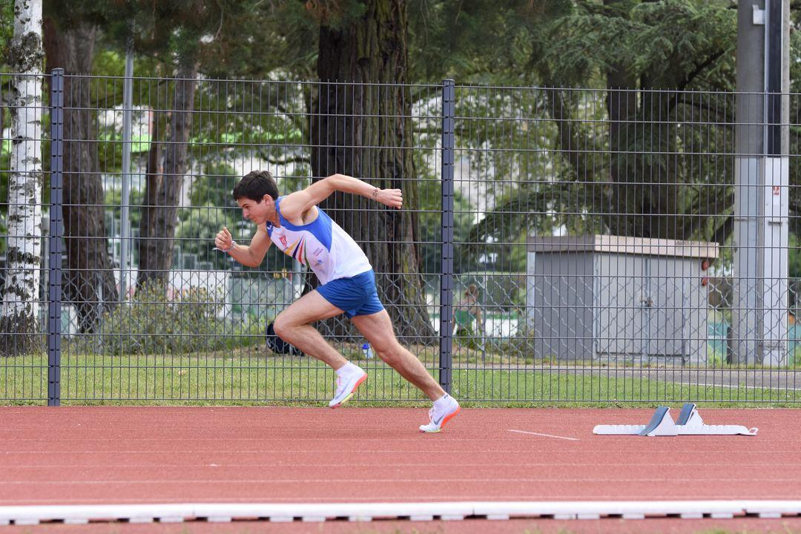
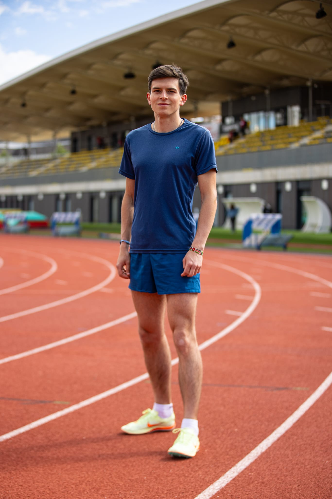

Je m'appelle Léo Bernardin, actuellement en stage de fin d'études chez Michelin via Akkodis. Passionné par la donnée et l'IA, j'aime apporter mes compétences à des projets concrets, de l'exploration des données au déploiement de modèles. Mobile dans toute la France.
Enseignements principaux : Machine Learning et Deep Learning, mathématiques appliquées à l'IA, statistiques inférentielles et bayésiennes, méthodes de Monte Carlo, optimisation, bases de données avancées (SQL et NoSQL), entrepôt de données, Git, Power BI, Databricks.
Formation pluridisciplinaire alliant mathématiques approfondies, informatique et sciences physiques. En informatique : SQL, bases de données, systèmes d'information, programmation. En mathématiques : algèbre linéaire et euclidienne, analyse, arithmétique, méthodes discrètes, équations aux dérivées partielles, mesure et intégration.
Design d'un robot assisté par IA détectant les vignes suspectes de maladie, équipé d'un bras mécanique pour prélèvements PCR. Présentation orale devant jury professionnel.
Obtention d'une bourse sur critères académiques et sportifs (athlétisme).
Projets menés en stage et en formation, dans des contextes industriels, médicaux et de recherche.
Computer Vision / Industrie
Détection d'usure de pneus Michelin
Détection d'usure de pneus Michelin
Analyse de données / Santé
Asynchronies patient-ventilateur
Asynchronies patient-ventilateur
Deep Learning / Vision
Estimation de distance via LoRA
Estimation de distance via LoRA
Je pratique l'athlétisme depuis 9 ans au Clermont Athlétisme Auvergne, sur 800m. C'est avant tout ma passion, ce qui me motive et me pousse à donner le meilleur de moi-même au quotidien.
J'ai participé aux Championnats de France FFA à 5 reprises, dont une finale avec une 8e place en 2022. J'ai également représenté mon université aux Championnats de France Universitaires à 3 reprises.
L'athlétisme m'a appris la rigueur, la discipline et surtout la résilience. Ne jamais abandonner, repousser ses limites, se relever après chaque échec. Ces valeurs, je les applique chaque jour dans mon travail.


N'hésitez pas à me contacter.
Clermont-Ferrand
Mobile dans toute la France
+33 6 41 02 28 67